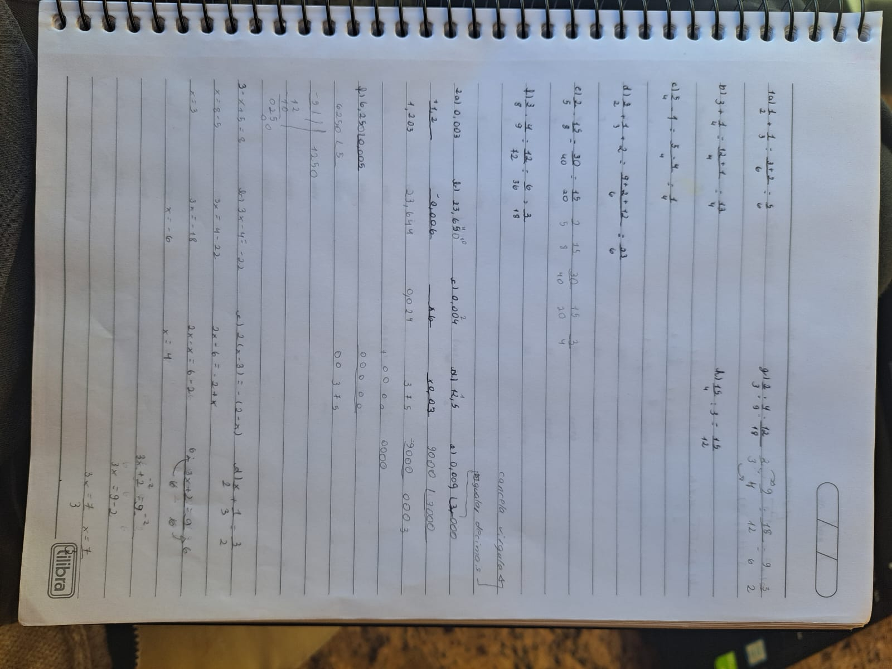

Primeiramente, para começar o ano, foi passada uma revisão de conteúdos dos anos passados, que continha exercícios como: conta com casas decimais, contas envolvendo frações e algumas equações de primeiro grau.
A revisão foi obviamente a parte mais facil até agora, todos os conteúdos eu ja sabia. A unica parte que mesmo depois da revisao, ainda sinto que preciso dar uma atenção especial é para frações, mais em especifico calculos com frações. Eu sei fazer, ja procurei varias vezes sobre esse conteúdo, mas quando eu fico muito tempo sem colocar meus conhecimentos sobre fracao em pratica, acabo esquecendo como se faz, mas só preciso de alguns gatilhos e já lembro como tinha que fazer. Para melhorar meu conhecimento sobre esse conteúdo, vou começar a fazer pelo menos uma vez por semana uma lista de exercicios especifica sobre frações, dessa forma vou estar sempre relembrando, até que uma hora nao vou mais ter um branco na hora de resolver alguma conta com fração.